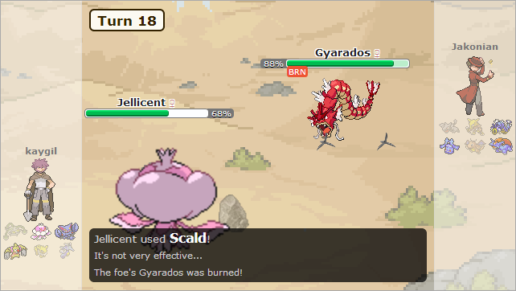

Stall Team Supreme!
I got an email today notifying me that my Stunfisk strategy was voted the #3 strategy of Summer 2013 in the world of competitive Pokemon battling. This is really flattering, honestly. I’m just an amateur. I haven’t bought one of the games since the GBA era, and I only keep up to date thanks to Smogon and Pokemon Showdown. I’m including the entirety of my strategy after the break.

What is any Pokemon team, really? What makes any strategy more effective than another? When I was playing competitive Pokemon, I often found that I felt more comfortable playing reactively than offensively. I enjoyed the challenge of predicting the opponent, or responding correctly to his or her movements on the field. The core concept of this Pokemon team is that it should provide the trainer with no holes, no opportunties for the enemy to cause checkmate. Its goal is simple: no two Pokemon on this team of 6 should share a single type weakness. The most up-to-date type weakness charts can be found here and here. Bulbapedia has already provided the Generation 6 (coming out in a little less than two weeks1) type chart, while Smogon has yet to update with the new Fairy type.
/r/stunfisk moderator TheRealQuade had this to say about my strategy in his review:
There are so many ways to build a team that most people use a combination of different strategies to create their own well-rounded team. This one actually commits to the desire to have a full team that doesn’t have more than one weakness to any type. On top of that, it uses a full slate of 6 strong, OU pokemon and even has some great balance between offense (both physical and special) and defense. I don’t usually give props to cookie cutter OU teams like this, but the fact that it has so few weaknesses and is still multidimensional is quite the accomplishment.
Man, I feel, like, professional, or something.
I started my team using two renowned stallmates - Ferrothorn and Jellicent. These Pokemon have become infamous for usually being found together, because they are capable of resisting everything the other is weak to, and that’s a hard commodity to come by. As an added bonus, both of these juggernauts are defensive-oriented, making them perfect to start the foundation of a team. I decided that because Jellicent can absorb tons of hits on either side of the physical/special spectrum, but Ferrothorn can only eat Physical hits, it was important to take another physical tank Pokemon.
I chose Gliscor, whose Flying type also gives a crucial immunity to Ground type moves and who only sports two weaknesses himself. With the defensive core decided, I began piecing together the offensive side. Here, I chose a Dragon type, because Dragons are only weak to Ice - and Dragon. Taking a Dragon Pokemon would prevent me from choosing anything else Ice is super-effective against (Flying, Grass, and Ground), and we’ve already taken Gliscor (who is both Flying and Ground), so I need to look for a Dragon Pokemon who is not weak to Ice due to a dual-typing. There is only one Dragon pokemon outside of Ubers who is not weak to Ice: Kingdra. Kingdra is a very interesting Pokemon, because he’s actually ranked UU (or under-used). His stats just aren’t very menacing, yet his move set and Swift Swim ability can make him a very lethal threat. The problem is that everybody knows what Kingdra’s going to do when he comes to town: Rain Dance, Swift Swim, and Waterfall/Outrage, in that order. How do we deal with that level of one-dimensionality? I’ll address this further below.
The final two Pokemon I choose are a Fighting type and an Electric type, which on monotype Pokemon happen to not share any weaknesses with each other or any of the Pokemon I chose so far. Many candidates can fit this mold, but I personally decided to go with Conkeldurr and Jolteon, who are known for hitting like Mack trucks and having decent type coverage when attacking enemies of multiple types.
Here is the importable code for these Pokemon:
Ferrothorn @ Leftovers
Trait: Iron Barbs
EVs: 252 Def / 252 HP / 4 Atk
Impish Nature
- Spikes
- Thunder Wave
- Power Whip
- Leech Seed
Jellicent @ Leftovers
Trait: Water Absorb
EVs: 252 SDef / 252 HP / 4 SAtk
Calm Nature
- Scald
- Recover
- Will-O-Wisp
- Toxic
Gliscor @ Toxic Orb
Trait: Poison Heal
EVs: 184 Def / 252 HP / 72 Spd
Impish Nature
- Protect
- Toxic
- Stealth Rock
- Substitute
Conkeldurr @ Leftovers
Trait: Iron Fist
EVs: 252 Atk / 252 HP / 4 SDef
Adamant Nature
- Bulk Up
- Drain Punch
- Mach Punch
- Payback
Jolteon @ Life Orb
Trait: Volt Absorb
EVs: 252 Spd / 252 SAtk / 4 HP
Timid Nature
- Thunderbolt
- Volt Switch
- Signal Beam
- Hidden Power [Ice]
Kingdra @ Choice Specs
Trait: Sniper
EVs: 252 SAtk / 252 HP / 4 SDef
Modest Nature
- Draco Meteor
- Hydro Pump
- Ice Beam
- Surf
- Ferrothorn is our Physical wall, trying to keep strong attackers away with his Iron Barbs recoil and in general trying to setup and be as much of a pain in the ass as possible. The problem is that Ferrothorn has too many good moves to pick just 4. The biggest runner-up that didn’t make it into the moveset is Protect, with a shout-out to Stealth Rock.
- Jellicent is our Special wall, with as many stalling moves as you can shake a stick at. Will-o-Wisp physical attackers (for that -physical offense debuff) and anything made of Steel (because it’s immune to Toxic). Toxic the rest.
- I’ve had trouble trying to figure out what to do with Gliscor from a strategy point of view. One of the few guys on this team who can Stealth Rock, but it’s not like he Stealth Rocks very well at all, and probably worse than Ferrothorn who’s already hurting for a moveset as it is. Gliscor is nothing if not for his Toxic-Protect-Poison Heal combo, so what should we do with the final two moves, especially if one of them might have to be Stealth Rocks? This is probably one of my biggest flaws on the team (and where I’d love to hear advice) - I chose to take Gliscor down a very dangerous path by giving him no offensive moves. Stealth Rocks and Substitute here. Gliscor also suffers from “I wish I had more than 4 moves” Syndrome, as he would kill to have Taunt, Earthquake, a Flying type move, Ice Fang, and Roost. But I need a Lead who can do his job and then toxic as many people as possible. Thanks to the Prostitute combo (Protect and Substitute) I can turn one turn of Protect invulnerability into 3 if I protect over a Substitute. This will really leave a dent into anyone who’s been already Toxic’d by Gliscor himself or Jellicent. Unfortunately, this leaves Gliscor totally Taunt bait.
- Enough with the stall. Let’s get to the races with our offensive core. Conkeldurr starts off our physical offense with an unsurprising (and somewhat predictable) set. Really, the only important choice here is Ice Punch vs Payback. In almost all other cases, Ice Punch usually gets the advantage because it provides great coverage to Fighting type pokemon who really need it, but we’re going to need Payback to give Conkeldurr something to check Psychic types with and our Ice problem is being covered by a different ace up our sleeve.
- Jolteon has the speed that Conkeldurr lacks, outrunning nearly everything in the damn game, and God help anyone stupid enough to let you absorb an Electric attack with Volt Absorb. Meanwhile, Thunderbolt everything in sight, pack Hidden Power Ice to give Ground types something to think about, and use Signal Beam on the Grass types who switch in hoping to sponge an Electric attack.
- And last we come to Kingdra, who was actually the last addition to this team (regardless of what I said above). When it came down to it, my original selection for 6th was Kyurem-B, which would have left me with only 2 weaknesses to Fighting, but I felt like I could get a break somehow.
Did you know there are only 3 fully-evolved Pokemon without type weaknesses? You might guess the first one - Sableye! There’s another Dark/Ghost… Spiritomb! The last candidate is only without weakness because he has an ability (Levitate) which makes him immune to his only weakness of Ground: Elektross. However, all of these pokemon have mediocre stats to make up for their desirable typing, and I needed someone who could compete with the greatest Pokemon in the game.
The only Dragon(s) not weak to Ice are Palkia and Kingdra, who share Water/Dragon as their typing. There’s no room for a Rain Dance strategy, so Kingdra is kind of left out on his own without being able to utilize his very scary Swift Swim ability. I mentioned above that most trainers expect a physical Kingdra, using Swift Swim to double speed and come out with crazy strong Waterfall and Outrage in the rain. We’ll attempt to surprise these people with a coverage-based Choice Specs special attacking Kingdra. Most are expecting the Waterfall, or the Outrage, but we run Draco Meteor and Hydro Pump. Ice Punch? Nah, Ice Beam. Surf is the low-power high-accuracy back-up to Hydro Pump.
This group of Pokemon literally can’t be swept by just one move. It’s got some flaws to it, an over-reliance on status (Thunder Wave, Scald, Will-o-wisp, Toxic on just Ferrothorn and Jellicent alone), over-reliance on entry hazards (Spikes and Stealth Rocks) when I don’t have any Whirlwinds or Roars to phaze and force switches, and a complete lack of Fire type moves. But other than the occasional Forretress or Scizor, this team is pretty cohesive.
And on that same token, this team can run circles around opponents if you have good prediction. Sporting complete immunity to 6 types on 4 pokemon and some unexpected 4x resistances to Water and Fire on Kingdra (Ferrothorn’s 4x resistance to Grass is offset by 4x weakness to Fire, but let’s not mention that), and this team is designed to take hits and just keep on punishing the enemy.
I think the stars of the team are Gliscor, Conkeldurr, and Kingdra. Once all Steel types have been eliminated (courtesy of Conkeldurr) then Gliscor can essentially one-man the entire enemy team, if you play Protect-Toxic-Substitute right. Start with Protect to scout for their move, Toxic when you have the opportunity, then Substitute like your life depended on it. You’d rather be at 10% health with Toxic, Substitute , and a guaranteed Protect up on the next turn, than 95% health with no more Protect (or at least likely to fail), no more Toxic than before, and no reason to stall with Substitute.
A Conkeldurr who can predict when to Bulk Up suddenly gets very strong and very scary, as the only special type who can give him a hard time (Psychic) is going to be extremely surprised by his Payback, since he’ll go slower than practically any Psychic type ever made. After that, Drain Punch the crap out of everything and use Mach Punch for the kill.
And lastly, we come to Kingdra, who hits like a truck when people aren’t expecting his special attacks. Watch as the enemy puts out a physically defensive Steel type to sponge your impending Outrage, and gets OHKO by a Draco Meteor instead. Watch Heatran get rolled by a Hydro Pump he wasn’t expecting, and Grass types won’t see Ice Beam coming either. The catch is that you’ll have to switch out after you get Choice’d in after every move, but THAT’S OK because you’ll want to switch out and get that Draco Meteor Sp. Attack debuff off you anyway. May I recommend switching out to Jellicent or Ferrothorn? I hear they’ve got some great defensive typing…
TL;DR:
- I have just as many pokemon weak to the following types as I have pokemon that resist them: Flying, Ground, Ghost, Grass, Psychic, Ice, Dragon
- I have no pokemon weak to Poison, Rock, Bug, and Steel (with Normal assumed)
- I have at least 3 pokemon resistant to Poison, Bug, Steel, Water, and Electric
- Note that no one weak to Rock means no one weak to Stealth Rock
If anyone wants to watch some replays, I’ve got a bunch here:
- Gliscor stalls for 30 straight turns - Jolteon could have handled Gliscor on the switch if I used Hidden Power Ice instead of Signal Beam. Meanwhile on Turn 26, 2v3 remaining and all I’ve got is Gliscor and a near-dead Conkeldurr. I Toxic his last two pokemon not named Gliscor and I’m trying my best to protect Conk because it’s the only thing that has a chance at killing gliscor (and unlikely at that - it just has physical moves vs enemy Gliscor’s physical defense and Protect). However, although I know I can stall out Heracross, Hydreigon will probably out-Roost me. Starting Turn 39 I spam Stealth Rock and Toxic (useless because every pokemon on the field is already Toxic and Rocks are already up as he has no spinner) just to wear down his Gliscor’s Protect and EQ PP. Outlasting the enemy turns a victory here.
- Beating a Baton Pass team - Would have lost this one if not for the INCREDIBLE Ferrothorn/Gliscor stall between Toxic and Leech Seed (Gliscor stall is becoming somewhat of a trend, isn’t it…). Stealth Rocks forces out Ninjask but the Baton Pass to Dragonite and later Milotic nearly ended me. Even worse, I don’t have any Fire moves to damage Metagross.
- Stall Team SUPREME - Just an absolutely lucky game on my part. Again, completely pulled out of my ass due to fantastic Gliscor stall. I lose Jolteon and Kingdra in the first 5 turns, and everything looks like it’s going to go to shit. However, this game really showcases how even on a team with reliance on Toxic stall, Burn has its uses. Not only do I get a Will-o-wisp burn on Bronzong (after attempting to hit Salamence before the switch with a Toxic), I get an exceedingly lucky Scald burn on Gyrados at Turn 18. Despite picking up Moxie stacks, his Gyrados is not a full-game threat to me any more. I pick off his pokemon one by one, before finally putting the “killing” blow on Salamence with a Toxic. The guy doesn’t even think that the Toxic will do me any good, but I start using Gliscor and Jellicent as body bags to build up Toxic damage, eventually bringing Salamence to OHKO range. He realizes how fucked he is, tries to switch in Bronzong (who I rip to shreds) and Salamence dies on the switch to Stealth Rock damage.
-
http://bulbapedia.bulbagarden.net/wiki/Pok%C3%A9mon_X_and_Y↩